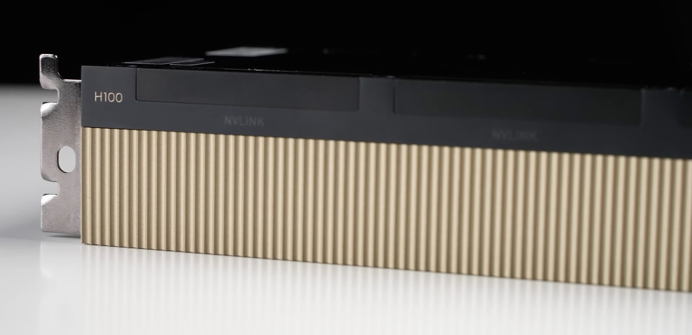

<title>Kernel X-Ray</title>
<meta name="claude:viewport-fit-sides" content="cover">
<link rel="preconnect" href="https://fonts.googleapis.com">
<link rel="preconnect" href="https://fonts.gstatic.com" crossorigin>
<link rel="stylesheet" href="https://fonts.googleapis.com/css2?family=Archivo:wght@500;600;700;800&family=Inter:wght@400;500;600&family=JetBrains+Mono:wght@400;500&display=swap">
<style>
/* Layout: a product page for profiling engineers: photo hero, then one working demo (counters left, answers right),
   then evidence, results, method. One accent (signal teal); counter heatmaps use their own fixed ramp on a dark plate. */
:root {
  --bg: #F4F5F3; --surface: #FFFFFF; --ink: #111614; --muted: #59625E; --rule: #D9DEDB;
  --accent: #087F73; --accent-ink: #FFFFFF; --plate: #0E1311; --plate-ink: #C9D3CF; --pending: #8A6A12; --good: #1F7A3F;
  --display: "Archivo", "Helvetica Neue", Arial, sans-serif;
  --body: "Inter", system-ui, -apple-system, "Segoe UI", sans-serif;
  --mono: "JetBrains Mono", ui-monospace, Menlo, monospace;
}
@media (prefers-color-scheme: dark) {
  :root:not([data-theme="light"]) {
    --bg: #0B0F0D; --surface: #121815; --ink: #E7EEEA; --muted: #95A39D; --rule: #24302B;
    --accent: #35C3B0; --accent-ink: #06201C; --plate: #070A09; --plate-ink: #B8C5BF; --pending: #E3C15F; --good: #5BCB83;
    color-scheme: dark;
  }
}
:root[data-theme="dark"] {
  --bg: #0B0F0D; --surface: #121815; --ink: #E7EEEA; --muted: #95A39D; --rule: #24302B;
  --accent: #35C3B0; --accent-ink: #06201C; --plate: #070A09; --plate-ink: #B8C5BF; --pending: #E3C15F; --good: #5BCB83;
  color-scheme: dark;
}
* { box-sizing: border-box; }
body { margin: 0; background: var(--bg); color: var(--ink); font-family: var(--body); font-size: 16px; line-height: 1.55; }
.wrap { max-width: 1180px; margin: 0 auto; padding-left: max(20px, env(safe-area-inset-left, 0px)); padding-right: max(20px, env(safe-area-inset-right, 0px)); }
h1, h2, h3 { font-family: var(--display); margin: 0; text-wrap: balance; letter-spacing: -0.015em; }
p { margin: 0; }
a { color: inherit; }
code, .mono { font-family: var(--mono); font-size: 0.86em; }
.eyebrow { font-family: var(--mono); font-size: 0.74rem; letter-spacing: 0.1em; text-transform: uppercase; color: var(--muted); }
section { padding-block: 72px; }
section + section { border-top: 1px solid var(--rule); }
.head { display: grid; gap: 10px; margin-bottom: 32px; max-width: 70ch; }
.head h2 { font-size: clamp(1.6rem, 3.2vw, 2.25rem); font-weight: 700; }
.head p { color: var(--muted); }
:focus-visible { outline: 2px solid var(--accent); outline-offset: 2px; }

/* Nav */
nav { position: sticky; top: env(safe-area-inset-top, 0px); z-index: 20; background: color-mix(in srgb, var(--bg) 88%, transparent); backdrop-filter: blur(10px); border-bottom: 1px solid var(--rule); }
body::before { content: ""; position: fixed; inset: 0 0 auto; height: env(safe-area-inset-top, 0px); z-index: 21; background: var(--bg); }
nav .wrap { display: flex; align-items: center; justify-content: space-between; gap: 16px; height: 58px; }
.brand { display: flex; align-items: center; gap: 10px; font-family: var(--display); font-weight: 800; font-size: 1.05rem; letter-spacing: -0.01em; text-decoration: none; }
.brand-mark { width: 22px; height: 22px; border-radius: 5px; background: var(--ink); position: relative; overflow: hidden; }
.brand-mark::after { content: ""; position: absolute; inset: 9px 3px 9px 3px; background: var(--accent); }
.navlinks { display: flex; gap: 22px; font-size: 0.9rem; color: var(--muted); }
.navlinks a { text-decoration: none; }
.navlinks a:hover { color: var(--ink); }

/* Hero */
.hero { padding-block: 56px 72px; }
.hero .wrap { display: grid; grid-template-columns: minmax(0, 1fr) minmax(0, 1.05fr); gap: 48px; align-items: center; }
.hero h1 { font-size: clamp(2.4rem, 5.4vw, 4.1rem); font-weight: 800; line-height: 1.0; }
.hero .lead { font-size: 1.15rem; color: var(--muted); max-width: 46ch; margin-top: 20px; }
.ctas { display: flex; flex-wrap: wrap; gap: 12px; margin-top: 28px; }
.btn { display: inline-flex; align-items: center; gap: 8px; padding: 12px 18px; border-radius: 8px; font-weight: 600; font-size: 0.95rem; text-decoration: none; border: 1px solid var(--rule); transition: transform .15s ease, background .15s ease; }
.btn.primary { background: var(--accent); color: var(--accent-ink); border-color: var(--accent); }
.btn:hover { transform: translateY(-1px); }
.facts { display: flex; flex-wrap: wrap; gap: 10px 28px; margin-top: 36px; padding-top: 20px; border-top: 1px solid var(--rule); }
.facts div { display: grid; }
.facts b { font-family: var(--mono); font-size: 1.15rem; font-weight: 500; font-variant-numeric: tabular-nums; }
.facts span { font-size: 0.8rem; color: var(--muted); }
.photo { margin: 0; position: relative; border-radius: 14px; overflow: hidden; background: var(--plate); aspect-ratio: 1600 / 775; max-width: 100%; }
.photo img { width: 100%; height: 100%; object-fit: cover; object-position: left center; display: block; }
.photo figcaption { position: absolute; left: 0; right: 0; bottom: 0; padding: 26px 16px 12px; font-size: 0.72rem; color: #E8EEEB; background: linear-gradient(transparent, rgba(0,0,0,.72)); }
.photo .probe { position: absolute; top: 14px; left: 14px; font-family: var(--mono); font-size: 0.72rem; color: #E8EEEB; background: rgba(0,0,0,.55); padding: 6px 10px; border-radius: 6px; }

/* Demo */
.tabs { display: flex; gap: 8px; overflow-x: auto; padding-bottom: 4px; margin-bottom: 20px; scrollbar-width: thin; }
.tab { flex: 0 0 auto; text-align: left; border: 1px solid var(--rule); background: var(--surface); color: var(--ink); border-radius: 10px; padding: 10px 14px; cursor: pointer; font: inherit; display: grid; gap: 2px; min-width: 168px; }
.tab b { font-family: var(--display); font-weight: 600; font-size: 0.95rem; }
.tab span { font-size: 0.74rem; color: var(--muted); }
.tab[aria-selected="true"] { border-color: var(--accent); box-shadow: inset 0 0 0 1px var(--accent); }
.demo { display: grid; grid-template-columns: minmax(0, 1.25fr) minmax(0, 1fr); gap: 20px; align-items: start; }
.plate { background: var(--plate); color: var(--plate-ink); border-radius: 14px; padding: 18px; display: grid; gap: 12px; min-width: 0; }
.plate-top { display: flex; justify-content: space-between; gap: 12px; flex-wrap: wrap; font-family: var(--mono); font-size: 0.74rem; }
.plate-top b { color: #FFFFFF; font-weight: 500; }
.heat { display: grid; grid-template-columns: 9.5rem minmax(0, 1fr); gap: 0 10px; }
.labels { display: grid; grid-template-rows: repeat(24, 1fr); font-family: var(--mono); font-size: 0.62rem; line-height: 1; }
.labels span { display: flex; align-items: center; justify-content: flex-end; white-space: nowrap; overflow: hidden; text-overflow: ellipsis; color: #9AA8A2; }
.labels span.key { color: #FFFFFF; }
canvas.hm { width: 100%; height: 336px; display: block; border-radius: 4px; image-rendering: pixelated; }
.tlrow { display: grid; grid-template-columns: 9.5rem minmax(0, 1fr); gap: 10px; align-items: center; }
.tlrow > span { font-family: var(--mono); font-size: 0.62rem; text-align: right; color: #FFFFFF; }
.tl { display: flex; height: 16px; border-radius: 3px; overflow: hidden; background: #1A2320; }
.tl div { height: 100%; }
.ruler { display: grid; grid-template-columns: 9.5rem minmax(0, 1fr); gap: 10px; }
.ruler .t { position: relative; height: 14px; font-family: var(--mono); font-size: 0.62rem; color: #7E8C86; }
.ruler .t span { position: absolute; transform: translateX(-50%); }
.ruler .t span:first-child { transform: none; } .ruler .t span:last-child { transform: translateX(-100%); }
.legend { display: flex; flex-wrap: wrap; gap: 6px 14px; font-size: 0.7rem; color: #9AA8A2; align-items: center; }
.ramp { width: 90px; height: 8px; border-radius: 2px; }
.sw { display: inline-block; width: 9px; height: 9px; border-radius: 2px; margin-right: 4px; vertical-align: -1px; }

.answers { display: grid; gap: 12px; min-width: 0; }
.card { background: var(--surface); border: 1px solid var(--rule); border-radius: 12px; padding: 16px 18px; display: grid; gap: 10px; min-width: 0; }
.card .q { font-family: var(--display); font-weight: 600; font-size: 1rem; }
.diag { border-color: var(--accent); }
.limiter { display: flex; align-items: baseline; gap: 10px; flex-wrap: wrap; }
.limiter b { font-family: var(--display); font-size: 1.5rem; font-weight: 700; color: var(--accent); }
.findings { margin: 0; padding-left: 1.1rem; display: grid; gap: 4px; font-size: 0.92rem; }
.try { display: grid; gap: 2px; padding: 10px 12px; border-radius: 8px; background: color-mix(in srgb, var(--accent) 10%, var(--surface)); }
.try span { font-size: 0.72rem; color: var(--muted); font-family: var(--mono); text-transform: uppercase; letter-spacing: 0.08em; }
.try p { font-weight: 600; }
.ans { font-family: var(--mono); font-size: 0.86rem; overflow-wrap: anywhere; }
.who { display: flex; gap: 8px; flex-wrap: wrap; font-size: 0.72rem; }
.pill { font-family: var(--mono); font-size: 0.68rem; padding: 2px 8px; border-radius: 999px; border: 1px solid currentColor; white-space: nowrap; }
.pill.ref { color: var(--muted); }
.pill.pend { color: var(--pending); }
.pill.ok { color: var(--good); }
.modelans { display: grid; gap: 4px; padding: 10px 12px; border-radius: 8px; border: 1px dashed var(--rule); width: 100%; }
.modelans .ans { font-family: var(--body); font-size: 0.9rem; }
.mini { display: grid; grid-template-columns: repeat(2, minmax(0, 1fr)); gap: 12px; }
.note { font-size: 0.82rem; color: var(--muted); margin-top: 14px; max-width: 80ch; }

/* Evidence */
.ev { display: grid; grid-template-columns: minmax(0, 1fr) minmax(0, 1fr); gap: 40px; align-items: center; }
.bars { display: grid; gap: 18px; }
.bar { display: grid; gap: 6px; }
.bar header { display: flex; justify-content: space-between; gap: 12px; font-size: 0.92rem; }
.bar header b { font-family: var(--mono); font-size: 1.2rem; font-variant-numeric: tabular-nums; }
.track { height: 14px; border-radius: 4px; background: var(--rule); position: relative; overflow: hidden; }
.track i { position: absolute; inset: 0 auto 0 0; background: var(--accent); border-radius: 4px; }
.track i.flat { background: var(--muted); }
.bar small { color: var(--muted); font-size: 0.78rem; }
.big { font-family: var(--display); font-size: clamp(3rem, 7vw, 5rem); font-weight: 800; line-height: 1; color: var(--accent); }

/* Results */
.table-wrap { overflow-x: auto; border: 1px solid var(--rule); border-radius: 12px; background: var(--surface); }
table { width: 100%; border-collapse: collapse; font-size: 0.92rem; min-width: 620px; }
th, td { text-align: left; padding: 12px 16px; border-bottom: 1px solid var(--rule); }
th { font-family: var(--mono); font-size: 0.7rem; letter-spacing: 0.08em; text-transform: uppercase; color: var(--muted); font-weight: 500; }
tr:last-child td { border-bottom: none; }
td.n { font-family: var(--mono); font-variant-numeric: tabular-nums; white-space: nowrap; }
tr.ours td { background: color-mix(in srgb, var(--accent) 7%, var(--surface)); }

/* Method */
.steps { display: grid; grid-template-columns: repeat(3, minmax(0, 1fr)); gap: 16px; }
.step { border-top: 2px solid var(--ink); padding-top: 14px; display: grid; gap: 8px; align-content: start; }
.step .eyebrow { color: var(--accent); }
.step h3 { font-size: 1.15rem; }
.step p { color: var(--muted); font-size: 0.94rem; }
.limits { display: grid; grid-template-columns: repeat(2, minmax(0, 1fr)); gap: 10px 32px; margin-top: 40px; padding: 20px 22px; border: 1px solid var(--rule); border-radius: 12px; background: var(--surface); }
.limits h3 { grid-column: 1 / -1; font-size: 1rem; }
.limits p { font-size: 0.9rem; color: var(--muted); }
footer { padding-block: 40px 56px; border-top: 1px solid var(--rule); font-size: 0.82rem; color: var(--muted); }
footer .wrap { display: grid; gap: 8px; }

@media (max-width: 900px) {
  .hero .wrap, .demo, .ev { grid-template-columns: minmax(0, 1fr); }
  .steps { grid-template-columns: minmax(0, 1fr); }
  .navlinks { display: none; }
}
@media (max-width: 560px) {
  .mini, .limits { grid-template-columns: minmax(0, 1fr); }
  .heat, .tlrow, .ruler { grid-template-columns: 6.2rem minmax(0, 1fr); }
  canvas.hm { height: 300px; }
  section { padding-block: 52px; }
}
@media (prefers-reduced-motion: reduce) { .btn { transition: none; } .btn:hover { transform: none; } }
</style>

<nav>
  <div class="wrap">
    <a class="brand" href="#top"><span class="brand-mark" aria-hidden="true"></span>Kernel X-Ray</a>
    <div class="navlinks"><a href="#demo">Demo</a><a href="#evidence">Evidence</a><a href="#results">Results</a><a href="#method">How it works</a></div>
  </div>
</nav>

<header class="hero" id="top">
  <div class="wrap">
    <div>
      <div class="eyebrow">GPU kernel performance diagnosis</div>
      <h1>Find what limits your GPU kernel.</h1>
      <p class="lead">Kernel X-Ray reads the hardware counters an NVIDIA H100 records while a kernel runs. It tells you what limits the kernel, where the time goes, and what to try next, in plain language.</p>
      <div class="ctas"><a class="btn primary" href="#demo">Diagnose a kernel</a><a class="btn" href="#evidence">See the evidence</a></div>
      <div class="facts">
        <div><b>1,444</b><span>profiled kernel traces</span></div>
        <div><b>24 × 512</b><span>counters × time bins each</span></div>
        <div><b>4</b><span>questions, one model</span></div>
      </div>
    </div>
    <figure class="photo">
      
      <span class="probe">24 counters · sampled over time</span>
      <figcaption>Photo: 极客湾Geekerwan, <a href="https://commons.wikimedia.org/wiki/File:NVIDIA_H100_(%E6%9E%81%E5%AE%A2%E6%B9%BEGeekerwan)_013.png">via Wikimedia Commons</a>, <a href="https://creativecommons.org/licenses/by/3.0">CC BY 3.0</a>, cropped</figcaption>
    </figure>
  </div>
</header>

<section id="demo">
  <div class="wrap">
    <div class="head">
      <div class="eyebrow">Live demo · real test kernels</div>
      <h2>Pick a kernel. Read its diagnosis.</h2>
      <p>Each kernel below was profiled on an H100 and held out of training. Left: its 24 counters over time. Right: the answers to four questions an engineer asks.</p>
    </div>
    <div class="tabs" role="tablist" aria-label="Test kernels" id="tabs"></div>
    <div class="demo">
      <div class="plate">
        <div class="plate-top"><span id="kname"><b></b></span><span id="kwork"></span></div>
        <div class="heat">
          <div class="labels" id="labels"></div>
          <canvas class="hm" id="hm" width="256" height="24" role="img" aria-label="Counter heatmap over time"></canvas>
        </div>
        <div class="tlrow"><span>What ran when</span><div class="tl" id="tl"></div></div>
        <div class="ruler"><div></div><div class="t"><span style="left:0">Bin 0</span><span style="left:25%">128</span><span style="left:50%">256</span><span style="left:75%">384</span><span style="left:100%">511</span></div></div>
        <div class="legend"><span>low</span><canvas class="ramp" id="ramp" width="90" height="8"></canvas><span>high (per counter)</span><span id="tlkey"></span></div>
      </div>
      <div class="answers">
        <article class="card diag">
          <div class="q">What limits this kernel, and what should I try?</div>
          <div class="limiter"><span class="eyebrow">Limiter</span><b id="lim"></b></div>
          <ul class="findings" id="find"></ul>
          <div class="try"><span>Try next</span><p id="try"></p></div>
          <div class="who" id="who-diag"></div>
        </article>
        <div class="mini">
          <article class="card"><div class="q">Where does the time go?</div><div class="ans" id="tq"></div><div class="who" id="who-t"></div></article>
          <article class="card"><div class="q">What kind of work is it?</div><div class="ans" id="wk"></div><div class="who" id="who-w"></div></article>
        </div>
      </div>
    </div>
    <p class="note">Reference answers are computed by fixed rules from the same counters; they are what the model is trained to say. Each card also shows the fine-tuned model's own answer on this held-out kernel, right or wrong. We picked one kernel per limiter, including rare ones, so this set is harder than average: across all 291 test kernels the model names the right limiter for 78.7%.</p>
  </div>
</section>

<section id="evidence">
  <div class="wrap ev">
    <div class="head" style="margin:0">
      <div class="eyebrow">Evidence · measured, not predicted</div>
      <h2>The diagnosis points at real speedups.</h2>
      <p>The dataset holds the same kernels in fp32 and in bf16. We diagnosed each fp32 version, then measured how much faster its bf16 version runs on the H100. Kernels diagnosed as memory-bound gained; ALU-bound kernels did not.</p>
      <div class="big">1.68×</div>
      <p class="mono" style="color:var(--muted)">median bf16 speedup of memory-bound fp32 kernels</p>
    </div>
    <div class="bars">
      <div class="bar"><header><span>Diagnosed <b style="font-family:var(--body);font-size:.92rem;font-weight:600">memory bandwidth</b></span><b>1.68×</b></header><div class="track"><i style="width:84%"></i></div><small>68 fp32/bf16 pairs from 34 kernels · interquartile range 1.17–1.87×</small></div>
      <div class="bar"><header><span>Diagnosed <b style="font-family:var(--body);font-size:.92rem;font-weight:600">ALU pipe</b></span><b>1.01×</b></header><div class="track"><i class="flat" style="width:50.5%"></i></div><small>18 fp32/bf16 pairs · no gain</small></div>
      <p class="note" style="margin:0">Busy time measured from the kernel timing in each trace. Scale: bar length ∝ speedup, full width = 2×.</p>
    </div>
  </div>
</section>

<section id="results">
  <div class="wrap">
    <div class="head">
      <div class="eyebrow">Results · held-out test kernels</div>
      <h2>How well does it diagnose?</h2>
      <p>Test kernels come from problems never seen in training. The release's own split leaks near-copies of test kernels into training, so we use a grouped split.</p>
    </div>
    <div class="table-wrap">
      <table>
        <thead><tr><th>Diagnosis: limiter accuracy (291 test kernels)</th><th>Score</th><th>What it uses</th></tr></thead>
        <tbody>
          <tr><td>Always the most common limiter</td><td class="n">0.402</td><td>nothing</td></tr>
          <tr><td>Limiter from the workload type</td><td class="n">0.570</td><td>the kernel's workload label</td></tr>
          <tr><td>Logistic regression on counter averages</td><td class="n">0.938</td><td>mean and std of each counter</td></tr>
          <tr><td>Fine-tuned model, diagnosis question only</td><td class="n">0.780</td><td>the full counter traces</td></tr>
          <tr class="ours"><td><b>Kernel X-Ray (fine-tuned OpenTSLM-Flamingo, Gemma 3 4B, all four questions)</b></td><td class="n" id="r-diag">0.787</td><td>the full counter traces, answers in text; 83% of its stated findings check out</td></tr>
        </tbody>
      </table>
    </div>
    <div class="table-wrap" style="margin-top:16px">
      <table>
        <thead><tr><th>Workload type: balanced accuracy (11 classes)</th><th>Score</th><th>Runs</th></tr></thead>
        <tbody>
          <tr><td>Logistic regression on counter averages</td><td class="n">0.751</td><td class="n">1</td></tr>
          <tr><td>MiniRocket (time-series classifier)</td><td class="n">0.811</td><td class="n">5 seeds</td></tr>
          <tr><td>Fine-tuned model, workload question only</td><td class="n">0.731</td><td class="n">1</td></tr>
          <tr class="ours"><td><b>Kernel X-Ray, all four questions</b></td><td class="n" id="r-cls">0.747</td><td class="n">1</td></tr>
        </tbody>
      </table>
    </div>
    <div class="table-wrap" style="margin-top:16px">
      <table>
        <thead><tr><th>Does it read the timeline?</th><th>Real trace</th><th>Control</th></tr></thead>
        <tbody>
          <tr><td>Trend questions asked on a trace and on the same trace run backwards: both answers right (a model that ignores time order scores 0)</td><td class="n">0.709</td><td class="n">0 by design</td></tr>
          <tr><td>Timing questions, real vs time-shuffled trace</td><td class="n">0.803</td><td class="n">0.465 shuffled</td></tr>
          <tr><td>Workload type with another kernel's trace but this kernel's summary text</td><td class="n">0.887</td><td class="n">0.378</td></tr>
        </tbody>
      </table>
    </div>
    <p class="note">One training run (seed 0, 2 epochs, 64 min on one H100). Base model before fine-tuning: 0 valid diagnoses.</p>
  </div>
</section>

<section id="method">
  <div class="wrap">
    <div class="head">
      <div class="eyebrow">How it works</div>
      <h2>From profiler counters to a plain-language diagnosis.</h2>
    </div>
    <div class="steps">
      <div class="step"><span class="eyebrow">Data</span><h3>KernelSight in TimeNet</h3><p>1,444 kernel traces from an H100: GEMMs, attention, convolutions and fused KernelBench problems, each with 24 counters over 512 time bins. Our TimeNet connector (PR #835) adds a leak-free split grouped by problem.</p></div>
      <div class="step"><span class="eyebrow">Model</span><h3>One fine-tune, four questions</h3><p>OpenTSLM-Flamingo reads every counter as a time series next to the text. We fine-tune it on 6,158 questions per epoch: diagnosis, timing, timeline and workload type. Gemma 3 4B stays frozen.</p></div>
      <div class="step"><span class="eyebrow">Checks</span><h3>Answers you can verify</h3><p>Every finding is a number you can check against the counters. We also test the model with shuffled, reversed and swapped traces, to see whether its answers come from the trace or from the averages.</p></div>
    </div>
    <div class="limits">
      <h3>What to know</h3>
      <p>The diagnosis labels come from fixed rules on the counters, not from human experts. Expert labels are the next step.</p>
      <p>Counter averages already carry much of the answer: logistic regression on them reaches 0.938.</p>
      <p>All traces come from one H100 and short, single-kernel runs.</p>
      <p>Results come from one or two training runs, labelled as such.</p>
    </div>
  </div>
</section>

<footer>
  <div class="wrap">
    <span>Kernel X-Ray · TimeNet Hackathon 2026, Round 1.</span>
    <span>Data: KernelSight (williamhtan/kernelsight), via our TimeNet connector, OpenTSLM/TimeNet PR #835. Model: OpenTSLM-Flamingo (opentime/tslm-nov26). Baseline CNN: kernel-xray. Photo: 极客湾Geekerwan, <a href="https://commons.wikimedia.org/wiki/File:NVIDIA_H100_(%E6%9E%81%E5%AE%A2%E6%B9%BEGeekerwan)_013.png">via Wikimedia Commons</a>, <a href="https://creativecommons.org/licenses/by/3.0">CC BY 3.0</a>, cropped.</span>
  </div>
</footer>

<script src="demo-data.js"></script>
<script>
(function () {
  var KX = window.KX; if (!KX) return;
  var LABEL = {"DRAM Read Bandwidth [Throughput %]":"DRAM read","DRAM Write Bandwidth [Throughput %]":"DRAM write","SMs Active [Throughput %]":"SMs active",
    "Tensor Active [Throughput %]":"Tensor active","pipe: tensor_op_hmma":"Tensor pipe","pipe: fma":"FMA pipe","pipe: alu":"ALU pipe","pipe: xu":"XU pipe",
    "pipe: lsu":"Load/store pipe","pipe: tma":"TMA pipe","pipe: cbu":"Branch unit","hit: l2":"L2 hit rate","gmem_coalesce_ratio":"Coalescing",
    "stall: barrier":"Barrier stalls","stall: short_scoreboard":"Scoreboard stalls","atom: lts_atomic_input_pct":"L2 atomics","pred_on_per_inst_ratio":"Predication",
    "sass_compute_tensor":"SASS tensor","sass_compute_fma":"SASS FMA","sass_memory_global":"SASS global mem","sass_memory_shared":"SASS shared mem",
    "sass_memory_tma":"SASS TMA","sass_control":"SASS control","sass_misc":"SASS misc"};
  var KEYS = {"memory bandwidth":["DRAM read","DRAM write","L2 hit rate"],"tensor cores":["Tensor active","Tensor pipe"],"FMA pipe":["FMA pipe","Tensor active"],
    "ALU pipe":["ALU pipe"],"XU pipe":["XU pipe"],"low SM utilization":["SMs active"],"launch gaps":["SMs active"],"barrier stalls":["Barrier stalls"],
    "latency":["Coalescing","ALU pipe"]};
  var STATE = {idle:"#26302C", unlabeled:"#56615C"};
  var CLASS = ["#35C3B0","#E3A94B","#8FA8F5","#EE7FA0","#B7D96A","#C49BEF"]; var seen = {};
  function stateColor(s) { if (STATE[s]) return STATE[s]; if (!seen[s]) seen[s] = CLASS[Object.keys(seen).length % CLASS.length]; return seen[s]; }
  // ramp: near-black -> deep teal -> teal -> pale yellow (fixed, on the dark plate in both themes)
  var STOPS = [[0,[16,22,20]],[0.35,[16,84,80]],[0.7,[53,195,176]],[1,[244,236,170]]];
  function ramp(v) { for (var i = 1; i < STOPS.length; i++) { if (v <= STOPS[i][0]) { var a = STOPS[i-1], b = STOPS[i], t = (v - a[0]) / (b[0] - a[0]);
    return a[1].map(function (c, j) { return Math.round(c + (b[1][j] - c) * t); }); } } return STOPS[STOPS.length-1][1]; }
  var r = document.getElementById("ramp").getContext("2d");
  for (var x = 0; x < 90; x++) { var c = ramp(x / 89); r.fillStyle = "rgb(" + c + ")"; r.fillRect(x, 0, 1, 8); }
  var labels = KX.channels.map(function (c) { return LABEL[c] || c; });
  function verdict(ok, what) { return '<span class="pill ' + (ok ? "ok" : "pend") + '">' + (ok ? "matches the reference" : (what ? "different " + what : "differs from the reference")) + "</span>"; }
  function pending(id, text) { document.getElementById(id).innerHTML = '<span class="pill ref">Reference: computed from counters</span><span class="pill pend">' + (text || "Model answer: pending evaluation") + "</span>"; }
  function show(k) {
    document.querySelectorAll(".tab").forEach(function (t) { t.setAttribute("aria-selected", t.dataset.id === k.id ? "true" : "false"); });
    document.getElementById("kname").innerHTML = "<b>" + k.name + "</b> · " + k.detail;
    document.getElementById("kwork").textContent = "test kernel · " + k.workload;
    var keys = KEYS[k.limiter] || [];
    document.getElementById("labels").innerHTML = labels.map(function (l) { return '<span class="' + (keys.indexOf(l) >= 0 ? "key" : "") + '">' + l + "</span>"; }).join("");
    var raw = atob(k.heat), cv = document.getElementById("hm"), ctx = cv.getContext("2d"), img = ctx.createImageData(256, 24);
    for (var i = 0; i < raw.length; i++) { var col = ramp(raw.charCodeAt(i) / 255); img.data.set([col[0], col[1], col[2], 255], i * 4); }
    ctx.putImageData(img, 0, 0);
    var steps = k.timeline.split(";").map(function (s) { var p = s.trim().split(" "); return {at: +p[0], s: p.slice(1).join(" ")}; });
    var tl = document.getElementById("tl"); tl.innerHTML = ""; var names = {};
    steps.forEach(function (st, i) { var end = i + 1 < steps.length ? steps[i+1].at : 512, d = document.createElement("div");
      d.style.width = ((end - st.at) / 512 * 100) + "%"; d.style.background = stateColor(st.s); d.title = "Bins " + st.at + "–" + (end - 1) + ": " + st.s; tl.appendChild(d); names[st.s] = 1; });
    document.getElementById("tlkey").innerHTML = Object.keys(names).map(function (n) { return '<span><i class="sw" style="background:' + stateColor(n) + '"></i>' + n + "</span>"; }).join(" ");
    var m = k.model || {};
    document.getElementById("lim").textContent = k.limiter;
    document.getElementById("find").innerHTML = k.findings.map(function (f) { return "<li>" + f + "</li>"; }).join("");
    document.getElementById("try").textContent = k.try;
    if (m.diagnosis) document.getElementById("who-diag").innerHTML = '<div class="modelans"><span class="eyebrow">Fine-tuned model said</span><p class="ans">' + m.diagnosis +
      '</p></div><span class="pill ref">Above: reference, computed from counters</span>' + verdict(m.diag_ok, "limiter"); else pending("who-diag");
    var q = k.timing.q.replace(/\[Throughput %\]/g, "").replace(/'([^']+)'/g, function (_, n) { return "<b>" + (LABEL[n] || LABEL[n + "[Throughput %]"] || n.trim()) + "</b>"; });
    document.getElementById("tq").innerHTML = '<span style="font-family:var(--body)">' + q + "</span><br>→ " + k.timing.a;
    if (m.timing) document.getElementById("who-t").innerHTML = '<span class="pill ' + (m.timing_ok ? "ok" : "pend") + '">Model: ' + m.timing + "</span>" + verdict(m.timing_ok); else pending("who-t");
    document.getElementById("wk").textContent = k.workload;
    if (m.workload) document.getElementById("who-w").innerHTML = '<span class="pill ' + (m.workload_ok ? "ok" : "pend") + '">Model: ' + m.workload + "</span>" + verdict(m.workload_ok); else pending("who-w");
  }
  var tabs = document.getElementById("tabs");
  KX.kernels.forEach(function (k, i) {
    var b = document.createElement("button"); b.className = "tab"; b.type = "button"; b.setAttribute("role", "tab"); b.dataset.id = k.id; b.id = "tab-" + i;
    b.innerHTML = "<b>" + k.name + "</b><span>" + k.limiter + "</span>"; b.addEventListener("click", function () { show(k); }); tabs.appendChild(b);
  });
  show(KX.kernels[0]);
})();
</script>
